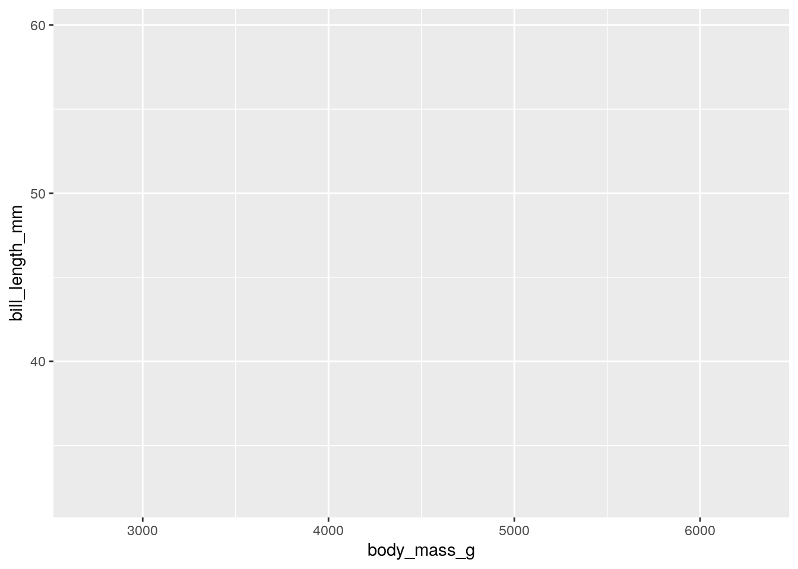
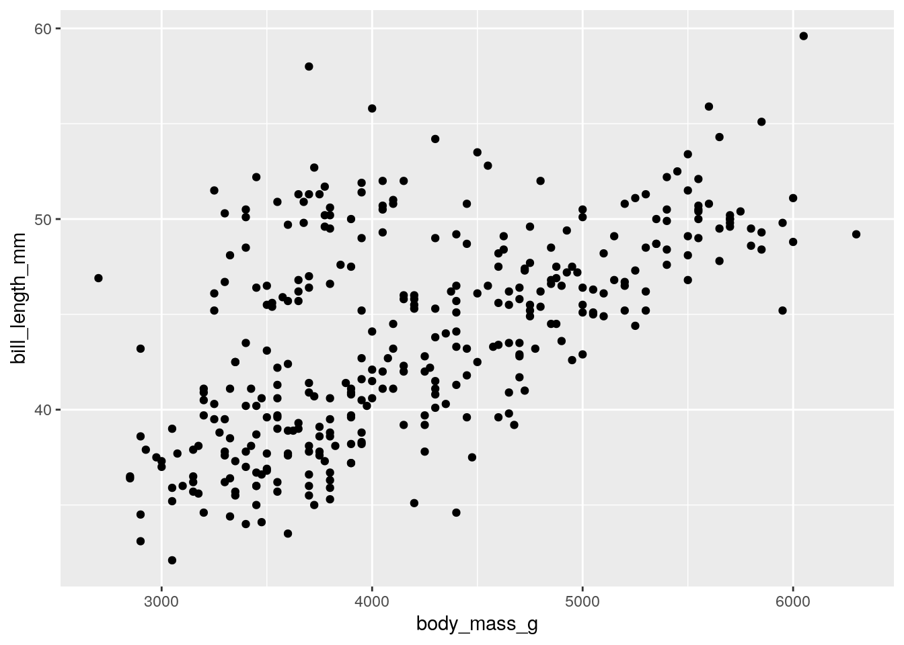
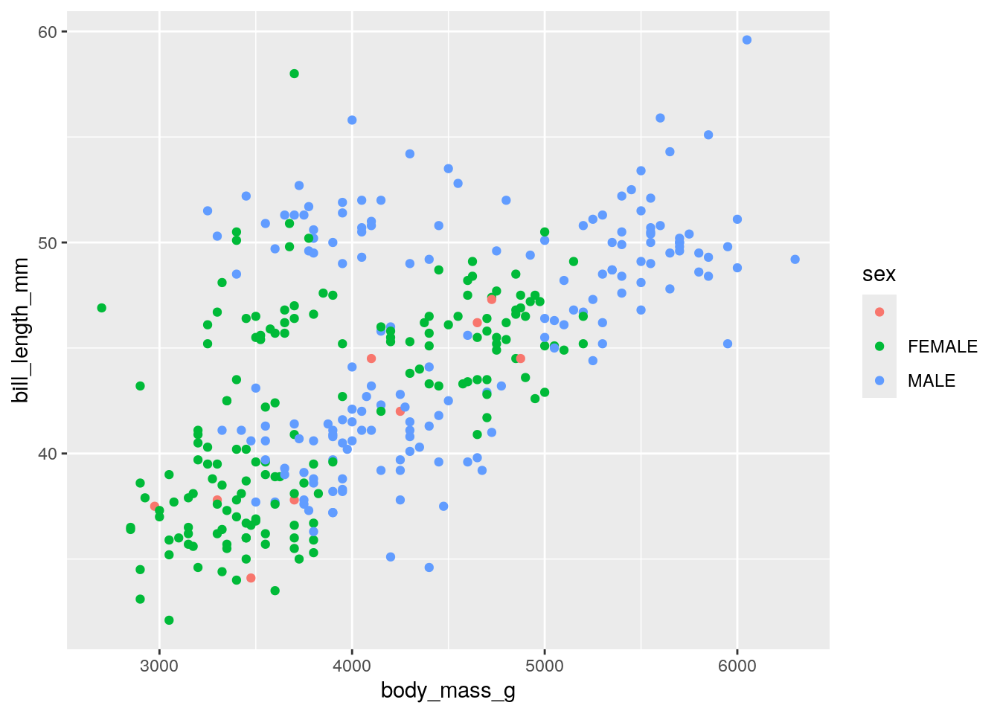
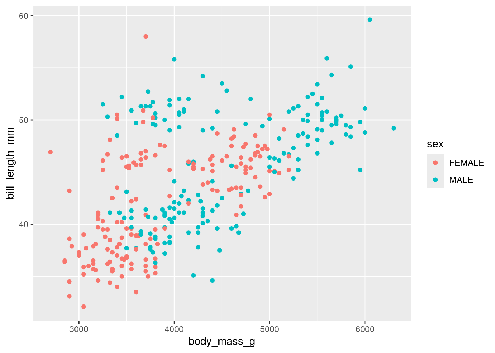
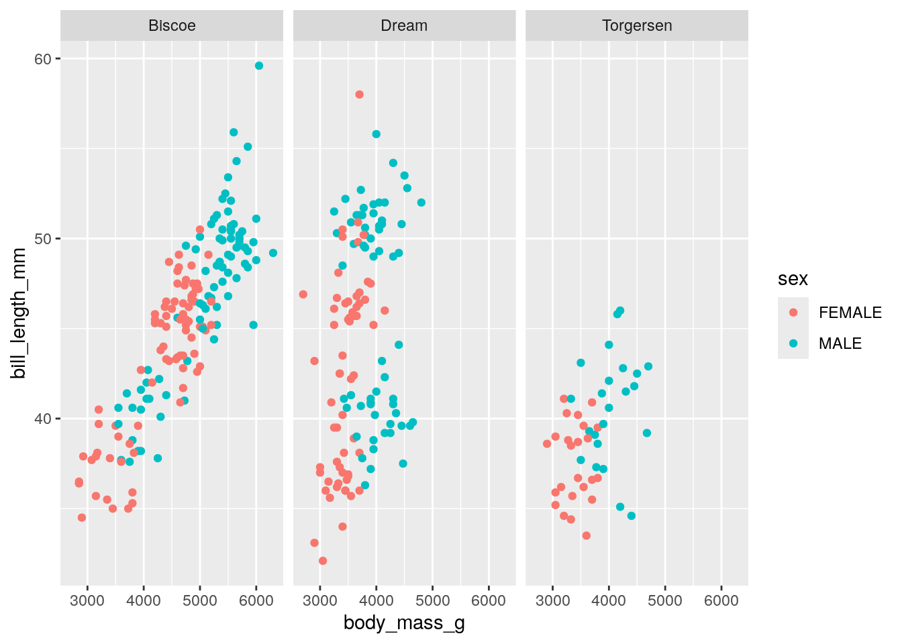
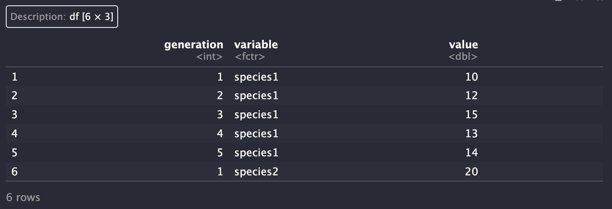
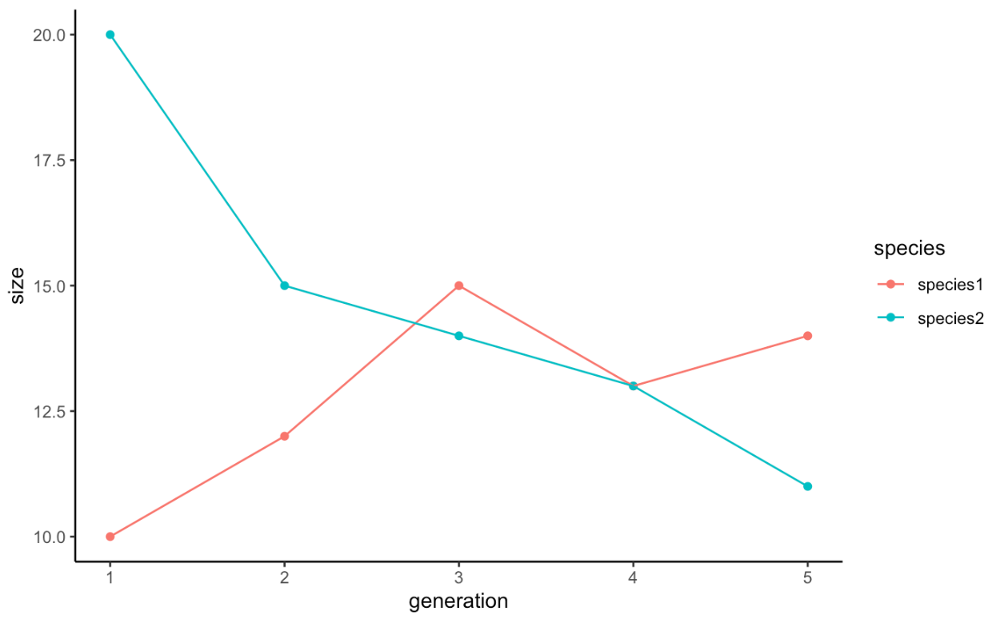

3.1 Class 2: Intro to R
8/27/2024
Today I want to give a pretty broad overview of the basics of using R. There are three big topics that I want to hit upon today. The first is just the basics of the language - what are the standard ways we interface with R? What data can we work with? So on.
Secondly, I want to introduce you to working with tabular data. Data tables are the heart and soul of R, and so today we’ll learn how to make them, read them in from a file, and manipulate them.
And lastly, I want to teach you a bit of the basics of plotting in R.
Every line of code that we write in an R script evaluates, unless we preface it with the hashtag #. In that case, everything in the line of code following the # is a comment and is ignored by the interpreter.
We can run our script by clicking, or with the nice hotkey Shift+Command+Return (Windows: Shift+Control+Enter). We can run our individual lines with Command+Return (Windows: Control+Enter).
3.1.1 Data Types, Variables, Math
3.1.1.1 Characters and Variables
In R, we have access to a lot of different data types. Text data is called Character data and is denoted by single or double quotes:
## [1] "ant"We’ve just written down that string and not actually done anything with it. Typically, though, we want to save and store our data for future use.
We can do this using variables. We assign a variable using the operators <- or =. For our purposes these are interchangeable for assignment; if you look at code online you’ll likely see both. I use <- since it is a little more common.
Now we have a thing in memory with the name insect. And associated with that name is some data - in this case, the word “ant”. Incidentally, you can see in the top right corner of your screen in the Environment tab there is now an insect variable with the associated word “ant”.
And now, whenever we want to access that data, we can use its variable name. For example, the print() function allows us to, fittingly, print data to the screen. We can print the contents of insect as such:
## [1] "cicada"And so just one bit of nomenclature - here, print() is the function, and insect - the thing we give to the function - is the function’s argument.
A little more about assignment: we can “overwrite” a variable by assigning new data to it.
## [1] "ant"Now, insect is associated with the value "ant". The old value is removed and the new one is added in its place.
I’ve just told you that insect is character data, but if you ever are working with data and you don’t know the type of data it is, you can investigate that using the class() function:
## [1] "character"3.1.1.2 Numbers
In many programming languages, you need to be very careful about different types of data - the difference between integers and numbers with decimal points is often extremely critical. R simplifies this a lot - under the hood, there are differences between these data types, but for our purposes we can broadly treat them as one type of data - numeric data.
Math is straightforward:
## [1] 5.14Notice that this does not modify the original value of aNumber:
## [1] 3.14To do that, we must use the assignment operator:
## [1] 6.28Other Math:
## [1] 7.2## [1] 2.333333## [1] 36## [1] 8This last point about math is fairly intuitive, so I don’t need to dwell on it too long, but R obeys standard order of operations. Just like in real math, you can use parenthesis to control the order of operations.
## [1] 7## [1] 83.1.1.3 Logical Data
R can represent whether conditions are true or false using the appropriately named, case-sensitive TRUE and FALSE. These can shortened to T and F.
A really nifty part of these is that they can also be automatically converted to the numeric 1 for TRUE and 0 for FALSE.
## [1] 2Now that we’ve seen the three major data types, one last thing about the assignment operator. Assignment can change the type of a variable. For example:
## [1] "numeric"## [1] "character"3.1.2 Comparing Values
Logical data most commonly appears when we compare values. We compare equality using the double equals sign:
## [1] TRUE## [1] FALSEWe can invert this using the != operator:
## [1] TRUEWe can likewise use > and < to check if things are greater or less than each other.
## [1] TRUE>= and <= are greater than/less or equal to:
## [1] TRUEWe can also use the exclamation point ! to negate logic in R:
## [1] FALSE## [1] FALSE3.1.2.1 Multiple Conditions
AND and OR operators are used to evaluate multiple conditions. Any number of conditions connected by AND and OR operators return only one TRUE or FALSE value.
3.1.3 Collections
Most of the time, our data doesn’t come in the form of individual discrete observations. Instead, we usually work with collections of data - for example, the size of a population across many years.
The most basic kind of collection in R is the vector, which combines multiple data points of the same type. We create a vector using the function c() (stands for concatenate).
## [1] "peach" "plum" "pear"If we mix data of multiple types, R automatically converts data, to the best of its ability:
## [1] "peach" "5.2" "pear"Notice that the numeric 5.2 is converted to the character "5.2" (see the quotation marks).
3.1.3.1 Adding to vectors
We can use the c() function to add to an existing vector:
## [1] "peach" "5.2" "pear" "apple"3.1.3.2 Indexing
We can extract from a vector using the brackets []. Inside the brackets, put the position of the item you want to extract:
## [1] "peach" "5.2" "pear" "apple"## [1] "5.2"## [1] "apple"We can provide a range or a vector of positions to extract multiple items from our vector:
## [1] "5.2" "pear" "apple"## [1] "peach" "pear" "5.2"We can combine indexing and the assignment operator to modify a vector. For example, changing "5.2" back to "plum":
## [1] "peach" "plum" "pear" "apple"3.1.3.3 Comparisons with vectors
We can use our comparison operators with vectors to compare the entire vector to a value.
## [1] FALSE TRUE TRUE FALSEWe return a vector of logical values!
3.1.3.4 Two other major types of collections:
3.1.3.4.1 Rep
We often want to repeat elements a set number of times. Writing this out by hand is annoying, so there’s a helpful function to do it for you: rep().
## [1] 5 5 5 5This repeats 5 four times.
We can also repeat vectors:
## [1] "stop" "go" "stop" "go" "stop" "go" "stop" "go"What if we want to repeat each element in the vector a set number of times before moving on to the next? e.g. we want to turn c("a", "b") into c("a","a","a", "b","b","b")?
## [1] "a" "a" "a" "b" "b" "b"So, notice that this the first function we’ve encountered that takes multiple arguments. Multiple arguments are extremely common. For most functions, the first argument will be the input data or a formula or something. It doesn’t need a name - R can figure that out on its own.
After that, though, most arguments are optional. So if you give R the code rep(c('stop', 'go'), 4), it won’t automatically know what that 4 means - it could be either times or each in that position. So it’s a good practice to explicitly tell R what your optional arguments are by writing their name.
Incidentally, how do we know what these optional arguments can be? This is something we need to know on a function-by function basis, and the ones for the common functions will be second nature to you sooner than you think. But also, we can look up our functions documentation using ?rep. And if our function is not from the default R language, we can do a broader search using ??rep?
3.1.3.4.2 seq
We often want to work with a series of numbers in order (1,2,3,4,5,…,n). The seq() function allows us to do this.
Let’s look at it in a bit more detail:
## [1] 1 2 3 4 5We can give seq() multiple numbers to create a start and stop condition:
## [1] 1 2 3 4 5 6 7 8 9 10## [1] 7 6 5 4 3Two important optional arguments for seq()
## [1] 5 10 15 20## [1] 4.000000 4.454545 4.909091 5.363636 5.818182 6.272727 6.727273 7.181818
## [9] 7.636364 8.090909 8.545455 9.0000003.1.4 Iteration
An extremely common thing for us is that we will want to perform actions over and over again. Say you have 30 individuals in a population and every generation it gets 10% bigger. We can write that out over and over, but it gets tiring and impractical soon.
## [1] 1
## [1] 2
## [1] 3
## [1] 4
## [1] 5So what we do here is take this sequence of 5 items. For each item, we take this temporary variable i, and we perform an action on it. Here, we just print it out.
## [1] FALSE
## [1] FALSE
## [1] TRUE
## [1] TRUE
## [1] TRUEWe don’t need to operate on i directly. For example, to implement that population example:
## [1] 33
## [1] 36.3
## [1] 39.93
## [1] 43.923
## [1] 48.3153
## [1] 53.14683
## [1] 58.46151
## [1] 64.30766So, here we take this variable N and we make it 10% bigger 8 times using our loop.
The last thing I want to touch upon here is that we put a for loop inside a for loop:
## [1] "bat"
## [1] "bar"
## [1] "cat"
## [1] "car"3.1.5 Data Frames: Tabular Data
So vectors are great, but usually we don’t keep track of just one thing - we normally have multiple variables that we track simultaneously - for example, time and population size. A data frame is a tabular data structure that lets us organize a lot of different data in one place.
Each column in a data frame is a vector - so within each column, the data needs to be of the same type. However, each column can be its own data type. So to make this concrete, let’s build a simple data frame with some made up data:
myDf <- data.frame(
numbers = c(1, 4, 6, 2, 3.3),
logic = c(T, T, F, F, T),
words = c("red", "green", "blue", "orange", "turquoise")
)
myDf## numbers logic words
## 1 1.0 TRUE red
## 2 4.0 TRUE green
## 3 6.0 FALSE blue
## 4 2.0 FALSE orange
## 5 3.3 TRUE turquoiseSo now that we’ve made a simple dataset, let’s load in some more elaborate real data.
We have a few ways of quickly looking at our data:
## species island bill_length_mm bill_depth_mm flipper_length_mm body_mass_g
## 1 Adelie Torgersen 39.1 18.7 181 3750
## 2 Adelie Torgersen 39.5 17.4 186 3800
## 3 Adelie Torgersen 40.3 18.0 195 3250
## 4 Adelie Torgersen NA NA NA NA
## 5 Adelie Torgersen 36.7 19.3 193 3450
## 6 Adelie Torgersen 39.3 20.6 190 3650
## sex
## 1 MALE
## 2 FEMALE
## 3 FEMALE
## 4
## 5 FEMALE
## 6 MALE## species island bill_length_mm bill_depth_mm flipper_length_mm body_mass_g
## 339 Gentoo Biscoe 47.2 13.7 214 4925
## 340 Gentoo Biscoe NA NA NA NA
## 341 Gentoo Biscoe 46.8 14.3 215 4850
## 342 Gentoo Biscoe 50.4 15.7 222 5750
## 343 Gentoo Biscoe 45.2 14.8 212 5200
## 344 Gentoo Biscoe 49.9 16.1 213 5400
## sex
## 339 FEMALE
## 340
## 341 FEMALE
## 342 MALE
## 343 FEMALE
## 344 MALEand View(penguins), which is analogous to clicking on it in the Environment tab.
So we can only see the first seven columns of our data here - if we ever want to know what all the columns are, we can use the names() function:
## [1] "species" "island" "bill_length_mm"
## [4] "bill_depth_mm" "flipper_length_mm" "body_mass_g"
## [7] "sex"We can also pretty easily get the dimensions of our data:
## [1] 344## [1] 7## [1] 344 73.1.5.1 Subsetting
We can extract columns from our data frame using the dollar sign. So for example if I want to see the island column, I can do:
Which we can now index the usual way:
## [1] "Torgersen" "Torgersen" "Torgersen" "Torgersen" "Torgersen" "Torgersen"We can also index the entire df the conventional way, but now we need to provide a row and column index:
## NULL3.1.5.2 Logical Indexing
Let’s say that we want the penguins with big bills.
We can use logical comparisons with the bill_length_mm vector to find which ones are 40 mm or longer.
This creates a huge vector of TRUEs and FALSEs. We can give this as a row index to pull out the TRUE rows:
Notice that the column index is blank - this means that we want to pull out all columns.
Notice that we retain rows where the bill length is NA are retained. The easiest way to address this is to remove rows with NAs. Checking for NA values in R is a bit finicky. The conventional way is to use the function is.na(). This returns TRUE for all NAs. We want the opposite of that, so we add in ! to negate it:
We can also use this type of logical comparisons to answer the question of how many penguins have long bills. penguins$bill_length_mm >= 40 returns a logical vector of T and F. Recall that these are equivalent to 1 and 0. So to find the number of TRUEs, we can just sum the vector:
## [1] 242Again, we need to remove the NAs for this to work as intended, so the sum function has an optional na.rm argument.
3.1.6 Plotting
For plotting, we use the external library ggplot2. This library is installed but because it is not a part of the base R programming language, we need to let R know that we will be using it. This is done with the following line of code:
To create a plot, we need to provide a data set that we will plot, along with defining some aesthetics (axes, colors, groups of data, etc.). Almost always, we will need to define the x and y axes. Let’s start by plotting the bill length and body mass of our penguins.

This already creates a nice plot. Notice that the axes are already scaled around your data.
Now we can add points. To add a geometric, we use the addition operator + to add a type of geometric object to our plots:
## Warning: Removed 2 rows containing missing values or values outside the scale range
## (`geom_point()`).
Now, we can also color our data by a different variable. This involves adding a color term to aes For example, recoloring by sex:
## Warning: Removed 2 rows containing missing values or values outside the scale range
## (`geom_point()`).
You may notice that some of our penguins are missing sex information. This is coded by an empty string "" rather than an NA. We can filter these out as such:
We retain just the rows where the sex column is not equal to ". Plotting this new dataset:

Another way to separate variables is to create multiple subplots. This is mostly easy done by adding facet_wrap() to our ggplot() statement. To facet_wrap(), we give the name of the column that we want to split by. For example, splitting the above plot by island: `
ggplot(penguinsFiltered, aes(x = body_mass_g,
y = bill_length_mm,
color = sex)) +
geom_point() +
facet_wrap("island")
Notice that for facet_wrap(), we need to give the column name in quotation marks.
3.1.7 Wide to Long
One thing you may have noticed is that when we plot our data, we want our data to be tall rather than wide. To make that a little more concrete, here’s a data set of population sizes for two species:
popSizes <- data.frame(
generation = seq(1,5),
species1 = c(10, 12, 15, 13, 14),
species2 = c(20, 15, 14, 13, 11)
)
head(popSizes)## generation species1 species2
## 1 1 10 20
## 2 2 12 15
## 3 3 15 14
## 4 4 13 13
## 5 5 14 11So if we go to plot this, we hit an issue:
There are a few workarounds for this, but one of the best ones is to reshape your data and make it taller.
The reshape2 library has a great function for this is:
We should now rename our columns to be a bit more descriptive. This can be done with the colnames() function:

Plotting is now straightforward:
ggplot(popSizesTall, aes(x = generation, y = size, color = species)) +
geom_point() +
geom_line() +
theme_classic()